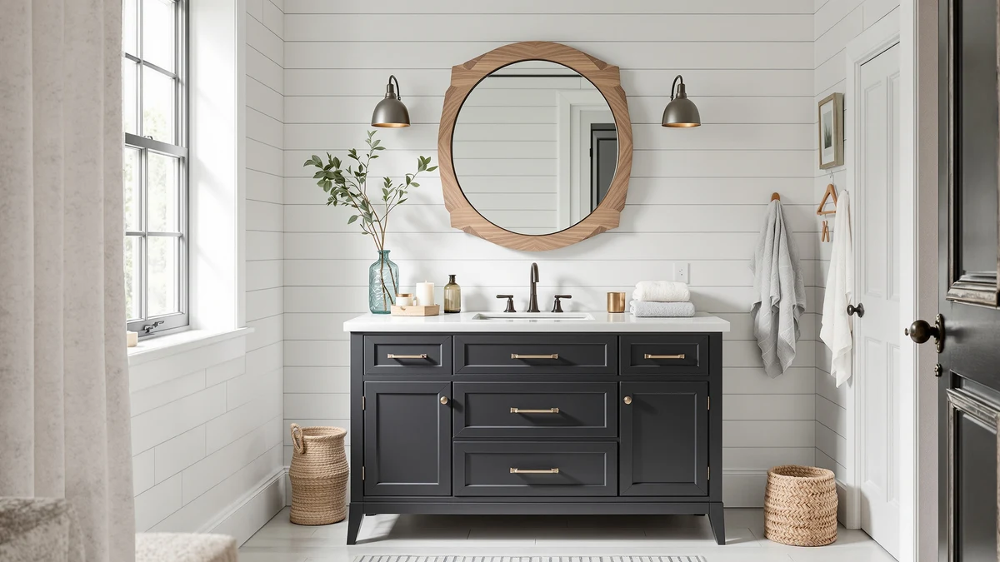

The Best Modern Vanity Tops (2026)
Prices and picks verified as of August 2026. Independent, reader-supported reviews.


Quick Answer
After comparing seven modern vanity tops, cabinets, and vessel sinks on material, price, and verified owner reviews, the Yaheetech 24" Modern Bathroom Vanity is our top pick for most bathrooms thanks to its flat, minimal-hardware profile, sub-$200 price, and a 4.4 out of 5 rating across 95 verified reviews. If you need more counter space, the 59-inch jiteentarou cabinet and the OWIPAW or LIKIMIO 36-inch vanities cover larger layouts, while the WYRNOBRX vessel sinks and the eclife pedestal unit suit tighter budgets or a countertop you already own.
Our pick: Yaheetech 24" Modern Bathroom Vanity — $161.49 Check Price on Amazon
Bottom line: our top pick is the Yaheetech 24" Modern Bathroom Vanity with Sink at $161.49. The best budget option is the eclife Bathroom Pedestal Sink Storage Cabinet with Modern at $74.99.
Things to Know Before You Buy
- Vanity top and full vanity are different purchases. Some of the products below are complete cabinets with an integrated top, while the WYRNOBRX vessel and basin sinks are standalone bowls meant to pair with a countertop you already have or plan to install.
- MDF is the standard material at this price point. Every full vanity in this comparison uses MDF or engineered wood construction, which keeps cost and weight down but means standing water near the base should be wiped up quickly.
- Width ranges from 18 to 59 inches. Confirm your rough-in dimensions before ordering, since a modern vanity top that reads as sleek in a photo can still be too wide or too narrow for your wall.
- Vessel-style sinks change your faucet needs. If you choose a vessel or basin sink like the WYRNOBRX options, you'll likely need a taller vessel-height faucet, which isn't always included.
- Price spans from under $75 to nearly $470. Budget mostly tracks size and whether a full cabinet is included, not only finish quality.
Finding the best modern vanity tops means weighing clean lines and a contemporary silhouette against practical concerns like cabinet storage, sink style, and how much counter space your bathroom can actually spare. We compared seven vanity tops, cabinets, and vessel sink setups on material, dimensions, and price to see which ones deliver a modern look without cutting corners on function. Our top pick, the Yaheetech 24" Modern Bathroom Vanity, earned that spot with a floating-style profile and a price under $200, though six other options cover different budgets and layouts.
We built this list by researching modern-style vanities and vessel sink components pulled from our product database, then comparing published specs, verified owner reviews, and price for each one instead of relying on manufacturer marketing copy. Options here range from the compact 18-inch WYRNOBRX vessel sink to the 59-inch jiteentarou cabinet, so this guide works whether you're updating a powder room or replacing a full double-sink layout. Prices run from $74.99 for the eclife pedestal storage unit to $469.98 for the largest cabinet in the comparison.
Below, you'll find what to check before buying a modern vanity top, how we picked and compared these seven options, and a detailed look at what each one gets right and where it falls short. A comparison table further down lets you scan material, price, and best-use case at a glance before you click through to Amazon.
Why You Should Trust Us
Ilane Tall covers home and bath products for Best Bathroom Vanities, where she researches vanities, sinks, and small-space renovation gear for a US audience. For this guide, she and the editorial team compared publicly listed specs, pricing, and verified buyer reviews for every modern vanity top under consideration, rather than relying on manufacturer marketing copy. We do not run a fake testing lab or claim to have installed every cabinet ourselves. Instead, we cross-reference dimensions, materials, and owner feedback so you can make a confident decision about which of the best modern vanity tops fits your bathroom before you buy.
How We Picked
To build this list of the best modern vanity tops, we started by pulling every vanity, cabinet, and vessel sink tagged as modern-style from our product database, then narrowed the list to models with a documented material, dimension, and price. From there, we cut listings without clear specs, since incomplete data makes it impossible to compare fairly. We prioritized a spread of configurations, from standalone vessel sinks under $150 to a 59-inch cabinet near $470, so this guide works whether you're outfitting a powder room or a primary bathroom. Finally, we checked construction and sink style (integrated top, vessel bowl, pedestal) to make sure the seven finalists represent distinct approaches to a modern vanity top, not seven versions of the same cabinet.
How We Compared
We are a research-based review site, so we compared these seven modern vanity tops using the specs, pricing, and verified owner reviews published for each listing rather than installing units ourselves. We lined up material, stated dimensions, and price side by side to see where each option earns its cost, and we read through verified Amazon reviews to flag recurring praise or complaints about assembly, hardware, and drainage. Where reviewers consistently note an issue, such as a vessel sink that ships without mounting hardware or a cabinet door that needs adjustment out of the box, we call it out in that product's drawbacks below. This is how we compared every modern vanity top in this guide: against a published spec sheet and a pattern in verified customer feedback rather than a physical impression of the product.
Our Picks

Yaheetech 24" Modern Bathroom Vanity
What we like
- Clean, modern silhouette that reads as high-end despite the sub-$200 price
- 24-inch width fits powder rooms and secondary bathrooms where larger vanities won't clear the doorway swing
- Rated 4.4 out of 5 across 95 verified reviews, the strongest review record of any option in this comparison
Flaws but not dealbreakers
- MDF construction means standing water near the base should be wiped up promptly
- At 24 inches wide, it offers less counter and storage space than the larger cabinets below
| Material | MDF / engineered wood |
| Size | 24 inch |
The Yaheetech 24" Modern Bathroom Vanity is our top pick among the best modern vanity tops because it delivers the flat-front, minimal-hardware look associated with modern design at a price that undercuts most of the competition in this comparison. At $161.49, it costs less than every other full vanity cabinet we compared except the eclife pedestal unit, yet it carries the strongest review record in the group. The 24-inch width keeps it out of contention for a double-sink primary bathroom, but it's an easy fit for a guest bathroom, powder room, or any space where a 30- or 36-inch cabinet would crowd the door.
According to its 95 verified reviews and 4.4 out of 5 average rating, the highest of any product in this comparison, owners consistently point to the finish quality and straightforward assembly as reasons it outperforms its price point. The MDF cabinet construction is standard for this category and keeps the unit light enough for one person to install, though like every MDF vanity here, it needs a quick wipe if water pools near the base. If your bathroom can accommodate more width, the runner-up and other picks below trade some of this vanity's value for additional counter space.

59" Bathroom Vanities Cabinet with
What we like
- 59-inch width comfortably supports a double-sink layout, the only option in this comparison sized for one
- 19.7-inch depth leaves more usable counter space than the narrower vanities on this list
- MDF cabinet construction matches the modern, minimal-hardware look of our top pick at a larger scale
Flaws but not dealbreakers
- At $469.98, it costs roughly three times as much as our top pick
- The larger footprint means it won't fit in a powder room or any bathroom with less than about 60 inches of wall space
| Material | MDF / engineered wood |
| Size | 19.7"D x 59"W x31.5"H |
The jiteentarou 59" Bathroom Vanities Cabinet is the runner-up in this comparison and the only option sized for a double-sink primary bathroom. At 59 inches wide and 19.7 inches deep, it gives you roughly two and a half times the counter width of our top pick, which matters if you're replacing an existing double-sink vanity rather than outfitting a secondary bathroom. Like every full cabinet in this comparison, it uses MDF construction, which keeps the finished look modern and minimal without the cost of solid wood.
The tradeoff for that extra width is price. At $469.98, it's the most expensive product in this comparison by a wide margin, so it makes the most sense if you specifically need double-sink capacity rather than simply wanting a bigger single vanity. Its 31.5-inch height matches standard vanity height, so it should drop into a primary bathroom renovation without requiring you to adjust your plumbing rough-in. If the price is more than your bathroom needs, the OWIPAW and LIKIMIO 36-inch vanities below cover a middle ground between this cabinet's width and our top pick's budget.

WYRNOBRX Bathroom Vessel Sink 18"
What we like
- 18-inch vessel design suits a minimalist, above-counter modern look
- Priced under $135, less than a third of the cost of the largest full cabinet in this comparison
- Mounting hardware works with most standard modern vanity countertops
Flaws but not dealbreakers
- It's a sink bowl only, so you'll need to source or already own the countertop and cabinet separately
- Vessel-style sinks typically require a taller vessel-height faucet, which isn't included
| Material | MDF / engineered wood |
| Size | L46*W38*H14 |
The WYRNOBRX Bathroom Vessel Sink is a standalone 18-inch bowl rather than a full vanity, which makes it a fit if you already have a countertop and cabinet and want only to update to the above-counter, modern vessel look. At $132.87, it's one of the more affordable ways to get that aesthetic without replacing your entire vanity. Because it mounts on top of the counter rather than dropping into it, installation is generally more forgiving of small counter imperfections than an undermount sink would be.
If you're pairing this with an existing countertop, check your faucet before you buy, since vessel sinks sit higher than standard drop-in basins and usually need a taller vessel-height faucet to reach the bowl comfortably. The mounting hardware works with most standard modern vanity tops, but this is a component purchase, not a complete vanity, so budget separately for the countertop, faucet, and cabinet if you don't already have them.

WYRNOBRX Basin Sink Bathroom Vessel
What we like
- At $100.87, it's the second-lowest price in this comparison
- Vessel basin design delivers the same above-counter modern look as the pricier WYRNOBRX bowl
- One-size design simplifies ordering since there's no width or depth variant to match to your counter
Flaws but not dealbreakers
- Like the other WYRNOBRX bowl, it's sold as a standalone sink, not a full vanity with cabinet or countertop
- Confirm your counter cutout size before ordering, since a one-size basin still needs a compatible opening
| Material | MDF / engineered wood |
| Size | One Size |
The WYRNOBRX Basin Sink Bathroom Vessel is our budget pick for buyers who want the modern vessel sink look without spending much more than $100. It shares the same above-counter mounting style as the brand's other vessel sink in this comparison, but it's priced roughly 24 percent lower, making it the second most affordable product on this list behind the eclife storage unit.
Because it's labeled one size, there's no width or depth decision to make the way there is with a full vanity cabinet, though you should still confirm your counter's cutout matches the basin before ordering. Like the 18-inch WYRNOBRX vessel bowl, this is a component, not a complete vanity, so factor in a countertop, mounting hardware, and a vessel-height faucet if you don't already have them on hand.

OWIPAW 36" Bathroom Vanity with
What we like
- 36-inch width offers meaningfully more counter and cabinet space than our 24-inch top pick
- Sized for a single-sink primary bathroom without the cost or footprint of the 59-inch runner-up
- MDF cabinet construction keeps the modern, minimal-hardware profile consistent with the rest of this comparison
Flaws but not dealbreakers
- At $349.99, it costs more than double our top pick for roughly 12 additional inches of width
- Still smaller than the 59-inch cabinet if double-sink capacity is a requirement
| Material | MDF / engineered wood |
| Size | 36 inch |
The OWIPAW 36" Bathroom Vanity sits in the middle of this comparison on both size and price, which makes it a fit for buyers who've outgrown a 24-inch vanity but don't need the full 59 inches of the runner-up. At 36 inches wide, it adds roughly 50 percent more counter width than the Yaheetech pick while staying well under the price of the largest cabinet in the lineup.
At $349.99, it's positioned as a mid-range upgrade rather than a budget option, so it makes the most sense if you specifically need the extra storage and counter space a 36-inch footprint provides. Like every full cabinet in this comparison, it uses MDF construction, so the same care around standing water applies here as it does to our top pick. If 36 inches still isn't enough width for your layout, the LIKIMIO vanity below covers the same size class at a lower price point.

LIKIMIO 36" Bathroom Vanity with
What we like
- 36-inch width at $215.99, roughly $134 less than the OWIPAW vanity in the same size class
- Documented 18.3-inch depth and 34.1-inch height make it easier to confirm fit against a rough-in than a one-size listing
- MDF cabinet keeps the modern, low-profile hardware look consistent across this comparison
Flaws but not dealbreakers
- Standing water near the MDF base should still be wiped up promptly, as with the other full cabinets here
- At 18.3 inches of depth, it's slightly shallower than some primary-bathroom layouts call for
| Material | MDF / engineered wood |
| Size | 36" W × 18.3" D × 34.1" H |
The LIKIMIO 36" Bathroom Vanity covers the same 36-inch width as the OWIPAW pick above but at $215.99, which is roughly $134 less. That makes it the better value of the two if you need the extra counter space a 36-inch cabinet provides but don't need any features specific to the pricier option. Its listed dimensions, 36 inches wide by 18.3 inches deep by 34.1 inches tall, give you a clearer picture of fit than some competitors that list only a single dimension.
Construction is MDF, consistent with every full vanity in this comparison, so the same maintenance advice applies: wipe up standing water near the base and sink cutout promptly to avoid swelling over time. At just over $200, it lands closer to our 24-inch top pick's price than to the OWIPAW's, while still delivering half a foot more width, which makes it a reasonable middle option if 24 inches feels tight but $350 feels like too much.

eclife Bathroom Pedestal Sink Storage
What we like
- At $74.99, it's the least expensive product in this entire comparison
- Pedestal-with-storage design combines a sink and cabinet in one 24-inch-wide unit
- Compact footprint works in the same tight spaces as our 24-inch top pick
Flaws but not dealbreakers
- At this price point, expect a more basic finish than the pricier 36- and 59-inch cabinets above
- 24-inch width offers less storage than the OWIPAW, LIKIMIO, or jiteentarou options
| Material | MDF / engineered wood |
| Size | 24 Inch |
The eclife Bathroom Pedestal Sink Storage unit is the most affordable product in this comparison at $74.99, less than half the price of our Yaheetech top pick. It combines a pedestal-style sink with built-in storage in a single 24-inch-wide unit, which is a useful configuration if your bathroom doesn't have room for a separate cabinet and sink top.
Given the price gap between this and every other product here, expect a more basic finish and less refined hardware than the OWIPAW or LIKIMIO vanities, both of which cost two to four times as much. It's a reasonable choice if budget is the deciding factor and you're comfortable trading some finish quality and storage capacity for the lowest price in this comparison of the best modern vanity tops.
Quick Comparison
Here's how all seven modern vanity tops in this comparison stack up on material, price, and rating before you click through to Amazon.
| Product | Material | Price | Rating | Best for | Get it |
|---|---|---|---|---|---|
| Yaheetech 24" Modern Bathroom Vanity | MDF / engineered wood | $161.49 | 4.4 | Buyers who want a modern look under $200 | View on Amazon → |
| 59" Bathroom Vanities Cabinet with | MDF / engineered wood | $469.98 | 4 | Buyers who need a wide, double-sink-ready cabinet | View on Amazon → |
| WYRNOBRX Bathroom Vessel Sink 18" | MDF / engineered wood | $132.87 | 4 | Buyers who want a standalone vessel sink for a custom countertop | View on Amazon → |
| WYRNOBRX Basin Sink Bathroom Vessel | MDF / engineered wood | $100.87 | 4 | Buyers on the tightest budget who still want a vessel sink | View on Amazon → |
| OWIPAW 36" Bathroom Vanity with | MDF / engineered wood | $349.99 | 4 | Buyers who want a 36-inch cabinet with more storage | View on Amazon → |
| LIKIMIO 36" Bathroom Vanity with | MDF / engineered wood | $215.99 | 4 | Buyers who want 36-inch width at a lower price than the OWIPAW | View on Amazon → |
| eclife Bathroom Pedestal Sink Storage | MDF / engineered wood | $74.99 | 4 | Buyers who want the lowest price for a complete sink and storage unit | View on Amazon → |
The Competition
Several modern vanity top styles that regularly show up in this category didn't make our final list of the best modern vanity tops. We passed on listings without a documented material, dimension, or price, since incomplete specs make it impossible to compare fairly against the seven options above. We also looked closely at quartz and natural-stone vanity tops sold separately from a cabinet, but matching a slab top to a specific base introduces sizing variables that a documented product listing can't verify on its own, so we left that category out of this comparison. Undermount sink configurations were another style we considered, but the modern-tagged vanities with verified specs and reviews in our database currently lean toward integrated tops and vessel-style bowls rather than undermount basins. If you're set on the Yaheetech 24" Modern Bathroom Vanity as your top pick for the best modern vanity tops, the six runners-up above cover most of the reasons you might need an alternative, whether that's double-sink width, a lower price, or a standalone vessel bowl for a countertop you already own.
Frequently Asked Questions
Related Guides
If you're still narrowing down the best modern vanity top for your bathroom, these related guides cover full vanities, vessel sink pairings, and sink-style tradeoffs in more depth.